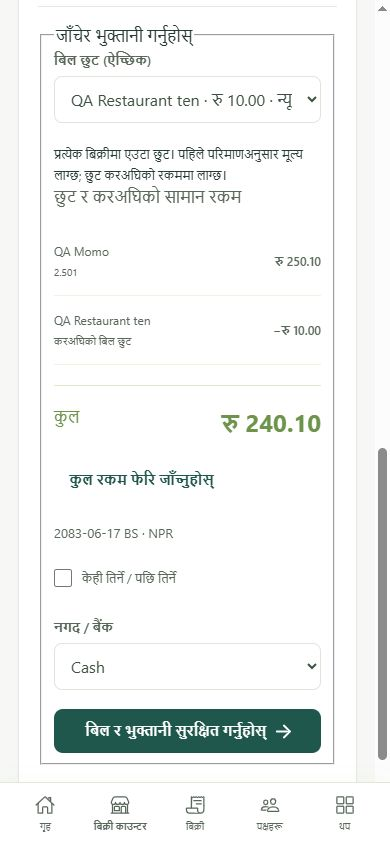
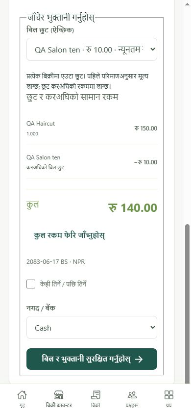

Meat shop
Pick meat/cut, enter weight or amount, review quantity and price, collect payment. Configure scale-label parsing before scanning weighed labels.
Sales, purchases, salary, rent, stock and appointments. Use the same web app on phone or computer.
Edition 4 · 4 October 2026. English instructions include key Nepali screen labels. Covers features currently available; planned features are listed at the end.
Create an account with your name, country, required phone number, email and password. Country and phone have separate fields on the same row. Nepal (+977) is selected first; choose another country when needed. Enter your national phone number without country code, for example 9801234567, or your landline number. Nepali digits are accepted. A pasted international number must match the selected country. Verify your email before opening a business. Phone collection does not verify phone ownership.
Open this guide inside the app from More / थप → User manual / प्रयोगकर्ता पुस्तिका. Use Back to return to More. The guide's print button prints the instructions.
Starting stock value means your cost, not selling price. Starting balances establish the beginning of these books; they do not record a new customer sale or supplier payment.
Use an empty starting balance only when this is a genuinely new business with no opening stock, money or dues. Add later stock through a purchase.
Bottom navigation keeps Home, POS, Sales, Parties and More close to your thumb. Home / गृह shows one view at a time: Daily actions / दैनिक काम, Balances / मौज्दात र बाँकी, Recent activity / हालको कारोबार or Low stock / कम मौज्दात. Activity and stock previews use Previous / अघिल्लो and Next / अर्को; See all opens sales history. Cashiers see their available actions. More / थप groups tools under Sales, Money, Stock, Business and Account. Choose a section, then a tool. User manual stays visible above every section.
Money is NPR. Enter rupees, for example 150.50. Quantity allows three decimal places, for example 2.501 kg. Dates use BS; use the displayed BS date or its date picker, not an AD date. Appointments use Nepal time.
Screens use compact spacing, steps and sections to reduce scrolling. Expanded details, long lists, errors, larger text and an open keyboard can still require vertical scrolling. Optional fields stay in expandable sections. Use them for due dates, references, notes or other details needed for that entry. Change English/Nepali from the workspace language control.
Open Parties / पक्षहरू → add party. Enter a useful name, phone and address. Select every role that applies: customer, supplier, employee or rent payee.
A person may be both customer and supplier, or employee and customer. Keep one party record and select the right daily action. Avoid creating a duplicate for each role.
Use party trading settings for payment terms, credit controls and price lists. See collections for amounts due; record a payment against the correct bill. Archiving preserves old records.
Available methods include quantity, amount, pack, length, area and volume where compatible with the item's base unit. Base-unit choices are grouped for easy selection:
Glass area uses length × width × pieces. Wood volume adds thickness. Choose a unit separately for each dimension; mixed metric and international inch/foot/yard measurements are supported. Board foot means 1 square foot × 1 inch thick.
For a bottle, tray, sheet, bundle or local measure, choose Add custom unit / आफ्नो एकाइ थप्नुहोस्. Give it a clear name and the quantity it represents in this item's billed base unit. Set a shop-agreed conversion; the app does not guess local measures. A custom pack uses that fixed conversion, not a new cutting or rounding formula.
For glass, enter length × width × pieces. For timber, use the configured length, area, volume or board-foot method. Select a unit beside each dimension. The bill records entered dimensions and the resulting base quantity.
Define a bottle, tray, bundle, sheet or local measure by its exact base quantity. Distinguish US gallon from Imperial gallon. Do not use an unnamed regional wood formula; configure the conversion you actually trade with.
All converted quantities round once to 0.001 billed base unit. Choose a suitably small base unit for very small goods; a conversion that rounds to zero is rejected. Amount entry also uses this precision. Review the resulting bill amount; some requested amounts cannot match exactly after rounding. Existing stock history restricts base-unit changes; plan units before receiving stock. Changing only the displayed unit name does not convert stock or prices.
Open POS → POS setup / काउन्टर सेटिङ. Choose the business profile and configure items/resources. Profile changes the entry screen; your branch keeps the same books.
Pick meat/cut, enter weight or amount, review quantity and price, collect payment. Configure scale-label parsing before scanning weighed labels.
Search/scan items, add quantity or configured pack, review cart and payment. Use categories for quick item selection.
Choose table or takeaway, enter order and send tickets to kitchen. Serve tickets before final checkout.
Choose staff/chair and service. Use walk-in checkout or schedule an appointment; record arrival before appointment checkout.
Book service, resource and Nepal-time slot. Manage arrival, service and completion; review saved service prices at checkout.
Choose product, enter litres or configured bottle/pack. Review quantity and amount; save payment now or named-customer due.
Choose glass type, dimensions, pieces and measurement units. Add cutting notes; review area and price. Use a quote/job for later work.
Choose timber or sheet and your configured method. Enter dimensions/pieces; review billed length, area, volume or board feet.
For an ordinary cart, review the app-calculated total, choose cash/bank and save. Named customers may pay partly or later; unpaid walk-in sales are restricted.
Waiter and kitchen views refresh while open and connected. Normal foreground refresh is about two seconds; a connection error means updates may be delayed. A changed order must be reviewed again.
Menu prices saved on tickets remain with the order. Checkout rechecks current offer terms. Sending tickets does not itself create the financial bill.

Reschedule or cancel using the booking action instead of creating an unnoticed duplicate. Walk-in checkout is available separately. Saved booking prices remain fixed; checkout offers use current availability. Appointment billing must match the booked BS date.

Use Sales for customer bills, Purchases for supplier goods and Expenses for business costs. Choose party, BS date, lines and price. Add only applicable tax and discount. Review total and payment before posting.
Save draft keeps an editable bill without changing money, stock or dues. Open the draft, edit it if needed, then review and post. Posting performs the financial and stock changes.
Clone as draft helps repeat a bill. Review party, new date, quantities, prices, discounts and tax; never assume last bill's terms are still valid.
Supplier references and bill dates help identify purchase paperwork. Attach supporting files to the saved record where available. Tax recording and recoverability depend on enabled business settings.
For a sale or sales draft, select an optional named offer in Review & save. Wait for the current total before saving. Selecting an offer clears the separate bill discount; line discounts remain. Offers do not apply to purchases or expenses.
A draft with an offer rechecks its saved terms before posting. If the offer changed, expired or became unavailable, choose Edit draft, review the new terms or remove the offer, save changes, then post. Cloning restores pre-offer prices and removes the named offer; choose any new offer explicitly.
A bill showing Source order allocation uses agreed source amounts for its quantities. Its rounding notes explain any price, tax or receipt-cost difference. An agreed offer label does not mean the whole original bundle was delivered. Copying an allocated bill keeps its rates/quantities and clears source discounts; review today's discounts and offers before posting the new draft.
More → Sales tools → Price lists: create reviewed item prices, party-specific lists and configured quantity pricing. Volume pricing applies a qualifying rate to the whole quantity; slab pricing splits quantity across configured bands. Review the calculated result.
More → Sales tools → Basket offers: create a named fixed/percentage basket offer, selected-item/category offer, bundle or buy/get offer. Set minimum spend, validity, schedule and staff permission where needed. Compatible choice groups may accept several items sharing one billed base unit.
Offers apply before tax. Bundle choices cannot count the same quantity twice. An unavailable offer must be removed or corrected. A selected named offer does not stack with a separate bill discount. Staff can use only permitted offers.
Returns use the original saved bill's prices and discount allocation. Changing an offer later does not change an already posted sale.
Open Quotes / orders / jobs. Choose quotation, sales order or purchase order; choose a business/job type for niche work. Select party, BS date, items and agreed prices. Add reference, specifications, validity and fulfilment date as needed.
Changing quantity, date, payment or other terms requires a fresh review. If save cannot be confirmed, fields stay locked: reconnect and use Retry original action. Do not create another entry.
For goods not yet billed, use Return unbilled quantities on their original recorded action. For billed goods, open the linked bill and use its normal return flow. Billed returns retain original amounts and costs and do not reopen order capacity for replacement.
Open quantity slip prints the actual action quantities, separate from billing/payment. Owners, managers and accountants can cancel a mistaken action with a BS date and reason, subject to later stock activity and dependent bills/returns. Cancel related bills/returns first when prompted. Cancelling a staged bill releases billing capacity and leaves the physical delivery/receipt recorded. Cancelled slips keep their quantities/status and omit customer details from an order that may now be edited.
Status changes and order/job summaries do not move stock or collect money. Before partial work starts, Review + create bill remains available for the original full-bill flow. Once partial actions are active, use their separate bill controls; order edit/cancel and full-order delivery sheets are restricted. Billing before delivery, package dispatch and backorder documents are still in progress.
For a quote or sales order, select an optional named offer and review the current total before saving. An accepted quote and its linked sales order keep that agreed discount when billed, even if the offer later changes. Quote validity still applies. Copying a quote restores pre-offer values and asks you to choose an offer again.
For the original full-bill conversion, cancelling the linked bill leaves the order closed. Copy for a replacement and review it. Cancelling a staged partial bill instead releases its billing allocation; the recorded delivery/receipt remains.
Open Regular payments / नियमित भुक्तानी. Select Employees, Rent or Other.
One monthly expense creates the payable. Payment later reduces that payable; it must not create a second expense. Check this month's remaining amount and next date before repeating.
Automatic dues create expenses/payables, not automatic bank transfers. Deployment must run the regular-payment schedule. Check displayed errors and overdue months; pausing stops future generation.
For a named customer sale, choose partial/later payment and enter actual amount paid now. Remaining bill amount becomes due, subject to party credit controls. Choose the correct cash/bank account.
Open Collections / payments to find dues by party/date. Review the bill and record money received from a customer or paid to a supplier/payee. Allocate to the intended bill; check its remaining amount afterward.
Follow-ups records promised dates, notes and next actions. Saving a follow-up does not send a message or receive money. A customer or supplier advance remains separate until correctly used.
Money also provides transfers between your accounts, personal money added and owner withdrawals. Choose the daily action that actually happened; transfers are not sales.
Returns cannot exceed unreturned original quantity. They preserve original prices, discounts, tax and stock cost. Do not use today's selling price for an old return.
For an entire mistaken posted bill, use cancel with a reason and allowed date. Cancel related active payments/returns first when prompted. Reverse later partial returns before earlier ones when required.
Correct drafts by editing or deleting them. Correct posted records through return/cancellation paths. Check the replacement bill before posting; do not overwrite financial history.
Ordinary posted purchases increase stock; ordinary posted sales decrease it. For staged orders, the delivery/receipt action moves stock first and its later bill does not move stock again. Services do not consume stock. Use Count stock for actual physical quantity, with the required adjustment reason and reviewed cost.
Set item categories and reorder settings. Open Reorder stock, review suggested items, quantities, supplier and price. Create the reviewed purchase order; use Receive goods / work for an actual partial receipt, then bill its completed quantities. The original full-bill flow remains available before staging starts.
Use reviewed CSV import for supported party/item fields. Download the template, preview errors and duplicates, then apply the confirmed import. CSV item import does not record a purchase or opening stock.
Configure alternate item codes, scale-label formats and printable Code128 labels before use. Scanner entry works with configured codes; direct physical scale readings and automatic printer/cash-drawer commands need separate device integration.
Open Sales, Purchases, Expenses or Money. Filter/search available records; open a record to see payment, remaining due, source links and supporting files.
Use the record's print action and your browser's printer/PDF destination. Use label preview before printing item labels. Paper size and printer settings must match your hardware.
Reports show the selected business and BS period. Review sales, purchases, expenses, stock, cash/bank and party balances using available reports. Export supported lists/reports where shown.
Owners/managers can review activity in Audit and configure period locks. A locked period restricts changes; ask the responsible owner to review the correct correction date.
Owner creates a branch from business settings/selection. Each branch needs its own opening setup, items, staff access and books. Use the business switcher before entry; confirm branch name at the top.
Invite staff to the intended business and choose an appropriate role. Cashiers see permitted sales tools and their own protected records. Owner/manager/accountant permissions differ; waiter/kitchen staff use their permitted restaurant views.
Membership in one branch does not automatically grant access to siblings. Branch grouping currently does not perform shared-stock transfers or consolidated tax filing.
Platform administration uses a separate superadmin sign-in. Ordinary business staff should use the business sign-in.
If saving loses its reply, keep the current screen and use Retry original action. The app retries the same entry so it can recover an already saved record.
While an outcome is uncertain, entry controls may stay locked. Restaurant/appointment views can show completion from another device while the retry is still needed to recover the original result.
Use stable internet for financial entry. The installed PWA currently does not accept offline financial writes. Closing the screen may lose an unsaved entry; resolve an uncertain save before leaving.
Available now Ionic web/PWA, separate business books, eight POS profiles, configured measurements, waiter/kitchen views, appointments, quotes/orders/jobs, reviewed offers on sale bills/drafts/quotes and checkout, party prices, salary/rent dues and daily bookkeeping.
Available Partial delivery/receipt, service completion, source unbilled returns, partial billing, progress and quantity slips. Use section 10 for the delivery-first flow.
In progress Billing before delivery/receipt, packages, dispatch and backorders. Further niche features remain tracked in the project feature ledger; controls appear as each batch is verified.
Separate release work Android/iOS native builds, offline financial entry, payment-provider collection, automated SMS/WhatsApp, public customer self-ordering, digital approval signatures, loyalty wallets and advanced industry production/dispatch features.
Current bill printouts are bookkeeping records. Nepal regulatory invoice issuance/certification is a separate release check. Enable tax settings only after reviewing your business's actual requirements.
Owner/operator must verify deployment, backups and restore procedures. Use the project's deployment guide for operating the installation. Keep staff accounts individual and review access when someone leaves.